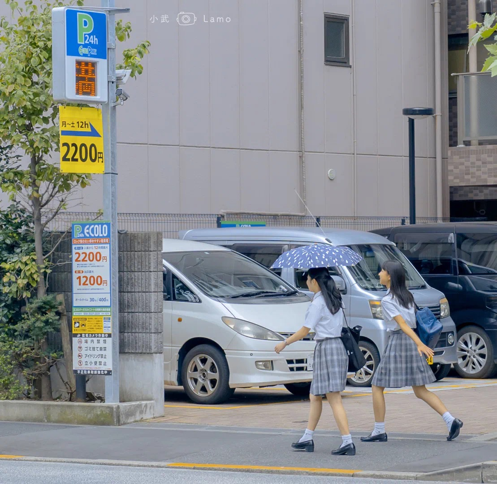

关于我
诗摘
留言板
高晓松说：“当你不慌张了，青春就不在了。”
20多岁的我们，其实并没有准备好。被时间猝不及防的推了一把，就站在了人生的路口。
口口声声说着活在当下，现有的实力却做不到让自己活得快乐。身边的人都在努力，我们便更没有资格现在就享受安逸。
《无问西东》里陈楚生说过这样一句话：“人把自己置身于忙碌之中，有一种麻木的踏实，但丧失了真实。你的青春不过只有这些日子。
我想，谁也不想在麻木的踏实里过完一辈子，但现在的我们只能选择让生活忙碌起来。
这注定会是一段漫长又辛苦的日子，时间像个贪得无厌的地主，不停压榨着汗水与眼泪，却不肯给出一个明确的未来。
每个年龄段都有它应有的苦。人生该走的弯路一米也不会少，谁也逃不掉。
我们别无选择。努力是我们与生活对弈的唯一筹码。在自己不够好的时候不声张也不埋怨，闷头努力就好。

√生活沉闷，但跑起来就会有风。
√你要等那个属于你的高光时刻.
√生活沉闷，但跑起来就会有风。
√你要等那个属于你的高光时刻.